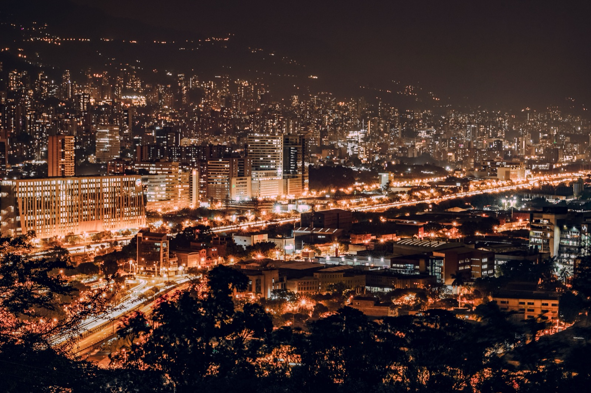
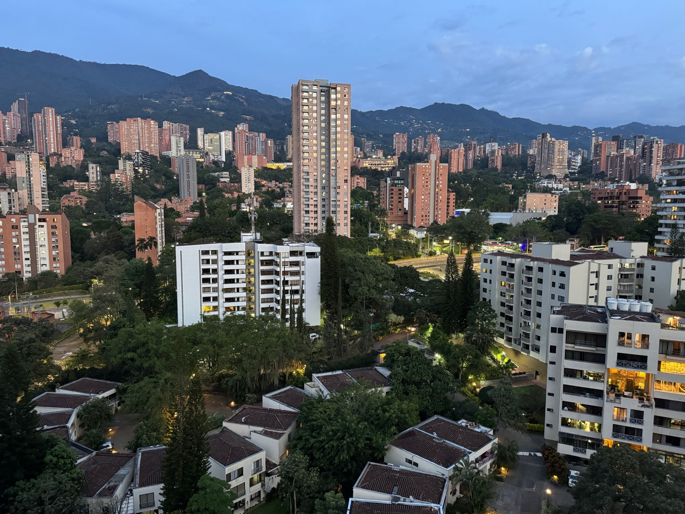

Moving to Medellín
A grounded 2026 guide to relocating to Medellín, Colombia: the eternal-spring climate, genuinely low cost of living, how safe it actually is now, the visa routes, and which neighborhoods expats choose.

Medellín has pulled off one of the great urban turnarounds, from its 1990s reputation to a modern, inventive city that keeps topping digital-nomad and expat lists. The pitch is strong. A spring-like climate all year, which is why locals call it the City of Eternal Spring. A cost of living well below Panama or Costa Rica. Warm people, and a beautiful green Andean valley. Here is the grounded 2026 version, including the safety nuance that actually matters.
Why people move here
- Eternal spring. At around 1,500m, Medellín has warm days and cool evenings all year, with no AC or heating.
- Genuinely low cost of living. One of the best-value cities in the Americas for the quality of life.
- Modern and connected. A metro system, strong café and coworking culture, fast internet, and a real innovation scene.
- Warm culture. Paisas are famously friendly, and the social life is rich.
- Excellent, cheap healthcare. Colombia's private care is world-class and remarkably affordable.
- Nature nearby. Green mountains, pueblos like Guatapé, and coffee country a short drive away.

What it costs to live in Medellín
This is Medellín's headline advantage. A couple can live very comfortably on $1,500 to $2,500 a month, and a single person on considerably less, noticeably cheaper than Panama or Costa Rica for a similar or better urban lifestyle. A realistic mid-range monthly budget for a couple:
| Monthly expense | Typical range (a couple, USD) |
|---|---|
| Rent (nice 1–2BR in El Poblado/Laureles) | $600–1,200 |
| Groceries | $300–500 |
| Dining out & entertainment | $200–400 |
| Utilities + internet (no AC needed) | $80–160 |
| Private health insurance | $100–250 |
| Transport (metro + taxis) | $80–200 |
| Typical total (very comfortable) | $1,500–2,500 |
Because the climate needs no heating or cooling, utilities stay low, and rents in even the best neighborhoods are a fraction of North American prices. The peso's exchange rate swings this for people earning dollars, so treat the numbers as 2026 approximate.
Is Medellín safe?
This one deserves a straight answer. Medellín today is far safer than its reputation. The cartel-war era is long over, and the expat neighborhoods of El Poblado, Laureles, and Envigado are pleasant and walkable. But it is a big Latin American city, and the rule locals live by is real: "no dar papaya," which means don't give an opportunity. Petty theft, phone snatching, and scams that target foreigners exist, and there have been high-profile incidents tied to nightlife and dating apps. Stick to the good areas, keep your phone discreet, use registered taxis or apps, and don't flash wealth, and daily life is comfortable. It is not the Medellín of the movies, but it does reward street smarts.

Visa options
Colombia has become notably expat-friendly:
- Digital Nomad Visa. For remote workers meeting a modest income threshold, up to two years.
- Migrant (M) visas. Including a Rentista or pension route, proving a monthly income that is often three to ten times the Colombian minimum wage depending on type, and investment routes.
- Resident (R) visa. The path to permanence after holding an M visa for several years.
- Property investment above a threshold can also support a visa category.
Colombia's thresholds are among the more accessible in the region. Confirm current requirements with a Colombian immigration attorney.
Healthcare
Colombia's healthcare is a genuine highlight. The private system is world-class and astonishingly affordable, and Medellín is home to some of Latin America's top hospitals, which makes it a real medical-tourism destination. Comprehensive private insurance costs a fraction of US premiums, and even out-of-pocket care is cheap by North American standards. For many people it is one of the strongest reasons to stay.
Best neighborhoods for expats
- El Poblado is the upscale, leafy, international hub, with the best restaurants, coworking, and nightlife. It is the most expensive and most foreigner-heavy.
- Laureles is flatter, greener, and more local, and it is increasingly the expat favorite for authenticity and value.
- Envigado is a calmer, family-friendly, traditional town just south, with a strong community feel.
- Sabaneta has small-town charm on the metro line, and is very livable and good value.
The trade-offs to know
- Safety takes street smarts. The "no dar papaya" mindset is non-negotiable, and complacency is where people get caught.
- Spanish is more necessary here. There is less English than in Panama's expat hubs, so you will want to learn it.
- Bureaucracy and paperwork, the Colombian trámites, can be slow and confusing.
- It is a big city, with traffic, noise, and pollution in parts. This is urban living, not a quiet beach town.
- The reputation lingers. You will field worried questions from family. The reality is far better, but the perception is real.
How to make the move
- Do a one-to-three-month trial. Medellín is easy to test on a tourist stamp before you commit.
- Base yourself in Laureles or El Poblado, where the infrastructure and community already are.
- Learn Spanish early. It transforms your safety, your social life, and your daily ease.
- Line up a Colombian immigration attorney to choose the right visa: Nomad, Rentista, or investment.
- Sort private health insurance. It is cheap and excellent, so get covered.
Comparing your Latin American options?
SORA helps foreign buyers find land, build, and settle in Panama and Costa Rica, with fixed-price design-build and people on the ground. The easiest place to start is what a home actually costs.
Compare with Panama →Frequently asked questions
How much does it cost to live in Medellín?
A couple can live very comfortably on $1,500 to $2,500 a month in Medellín, including a nice apartment in El Poblado or Laureles, groceries, dining out, healthcare, and transport. It is meaningfully cheaper than Panama or Costa Rica, helped by a climate that needs no heating or air conditioning.
Is Medellín safe to live in now?
Far safer than its old reputation. The expat neighborhoods of El Poblado, Laureles, and Envigado are pleasant and walkable. But it is a large Latin American city where street smarts matter, since petty theft, phone snatching, and scams targeting foreigners exist. Follow the local rule 'no dar papaya' (don't give an opportunity), stick to good areas, and use registered taxis or apps, and daily life is comfortable.
What visa options are there for moving to Medellín?
Colombia offers a Digital Nomad Visa for remote workers meeting an income threshold, Migrant (M) visas that include pension or Rentista and investment routes, and a path to a Resident (R) visa over time. Property investment above a threshold can also qualify. Thresholds are relatively accessible, so confirm current rules with a Colombian immigration attorney.
Why is Medellín called the City of Eternal Spring?
Because it sits at around 1,500 metres in a tropical valley, which gives it warm days and cool evenings essentially year-round, with no winter, no real summer, and no need for heating or air conditioning. That mild, stable climate is one of the biggest reasons expats and remote workers love it.
Is healthcare good in Medellín?
Yes. Colombia's private healthcare is world-class and remarkably affordable, and Medellín has some of Latin America's top hospitals, which draw real medical tourism. Private insurance costs a fraction of US premiums, and out-of-pocket care is inexpensive by North American standards, which makes it a major draw for expats.
Sources & verification
Figures in this guide were checked against primary and authoritative sources on 27 July 2026. Immigration, tax, and cost figures change — always confirm the current rules with the official body or a licensed professional before acting.
- International Living — Colombia / Medellín cost of living
- Numbeo — Medellín cost of living data
- Colombia Migración — visa categories (confirm current rules)